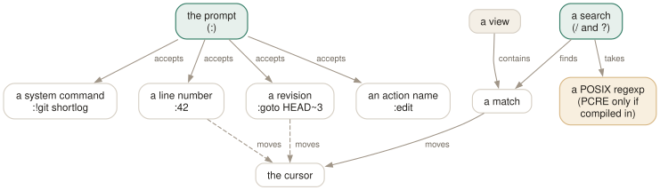

Day 05
Finding things
Search and the prompt are two different ways to move.
By the end of today you can
- search a view forwards and backwards, and know which regexp dialect your build speaks
- jump straight to a line number, a commit ID or a revision without searching at all
- run a git command from inside tig and read its output in the pager view
Two different questions
There are two ways to get somewhere in tig, and they answer different questions. / searches the text that is already loaded in this view. : addresses something by name — a line, a commit, a revision — whether it is on screen or not. Confusing them is why people scroll.

Search: it is the view's text, not the repository
/ prompts for a regexp and moves to the first line that matches; ? does the same backwards; n and N step through the matches.
The important limitation is in the first sentence: search looks at the lines this view has loaded. In the main view that is commit subjects, authors and dates — not commit messages in full, and certainly not file contents. Searching for a word that appears only in the body of a commit message will find nothing, and that is not a bug.
For the things search cannot reach, git already has answers and tig passes them through: tig --grep=pattern limits the main view to commits whose message matches, and tig -Spattern limits it to commits that changed the number of occurrences of a string. Day 10 goes through these properly; the grep view on Day 9 searches file contents.
Case is controlled by ignore-case, which is no by default. The value worth setting is smart-case: case-insensitive unless your pattern contains an uppercase letter, which is what most people mean most of the time. It goes in the file on Day 7.
The prompt: addressing things by name
: opens the prompt at the bottom of the screen. What you type is pattern-matched into one of several kinds of thing:
:42- A number: jump to that line of this view.
:2f12bcc- Something ID-shaped: jump to that commit.
:q- A single key: run that key's binding.
:qcloses the view. :edit- An action name: run it. Every name in the Day 12 tables works here.
:goto <rev>- A revision expression, resolved by git.
:!git shortlog -sn- A system command; its output opens in the pager view.
:echo <text>- Print a line in the status window. Useful when testing bindings.
:goto is the one worth learning properly, because it takes anything git would take: :goto v1.0, :goto origin/master, :goto HEAD~10. It also takes browsing-state variables, so :goto %(commit)^2 moves to the second parent of the commit under the cursor — the standard way to walk into the other side of a merge.
Where the cursor already knows to go
Two shortcuts sidestep both mechanisms. H jumps to the HEAD commit in the main view — useful after scrolling into 2019. And start-on-head (off by default) makes tig start there rather than at the top of the list, which in a repository where you often browse other branches is worth turning on.
The search keymap is a small piece of polish worth knowing about: while the search prompt is open, C-n and C-p — and the arrow keys — step through matches without closing it, so you can walk results and refine the pattern in one go.
Today's habit
Pick the small git command you most often leave a tool to run — git shortlog, git branch -vv, git reflog — and run it with :! instead for the rest of the week. Then start using :goto rather than scrolling to find a branch's tip.
Tomorrow: the view that changes your repository rather than reading it.
New vocabulary
Keys
| Key | Does |
|---|---|
| / | Search forwards. Prompts for a regexp. |
| ? | Search backwards. |
| n | Next match. N for the previous one. |
| : | Open the prompt. |
| H | Jump to the HEAD commit, in the main view. |
Commands
| Command | Does |
|---|---|
:42 | Jump to line 42 of this view. |
:2f12bcc | Jump to that commit. |
:goto <rev> | Jump to a revision: a branch, a tag, HEAD~3, %(commit)^2. |
:!git <cmd> | Run a git command and show the output in the pager view. |
:edit | Run an action by name. Any action name works here. |
:q | Run the binding for a key. Same as pressing q. |
:echo <text> | Print a line in the status window. |
:save-display <file> | Write the current screen to a file. |
Options
| Option | Does |
|---|---|
ignore-case | Search case handling: no (default), yes, smart-case. |
wrap-search | Wrap around the ends of the view. Default yes. |
history-size | Lines kept in ~/.tig_history. Default 500, 0 disables. |
Drillsdo these in a real terminal, today
Self-check
Answer out loud first, then unfold.
Your search for \d+ finds nothing, but [0-9]+ works. Is the regexp engine broken?
No — it is POSIX. tig uses POSIX extended regular expressions unless it was compiled with PCRE support, and \d is a Perl shorthand that POSIX ERE does not have. [0-9] and [[:digit:]] both work everywhere.
v tells you which build you have: if the version output lists PCRE or PCRE2 alongside ncurses and readline, you get Perl syntax. The build this course was checked against does not list it, so its searches are POSIX.
What is the difference between :2f12bcc and :goto 2f12bcc?
For a plain commit ID, very little — both move the cursor to that commit. The difference is what else they accept. The bare form is pattern-matched by the prompt: a number means a line, something that looks like a commit ID means that commit, a single character means “run that key's binding”.
:goto takes a full revision expression, so :goto HEAD~3, :goto origin/master and :goto %(commit)^2 all work, and the last of those — the current commit's second parent — is how you navigate a merge without leaving the view.
You press n repeatedly and the cursor eventually arrives back where it started, having passed the end of the view. Bug?
That is wrap-search, on by default. Searching past the last match continues from the top.
It is the right default for a commit list, where you usually want “find this anywhere”. It is the wrong one when you are walking matches to count them, because you will loop forever without noticing. set wrap-search = no makes tig stop at the end and say so.
You type :!git rebase -i HEAD~3 and get something unusable. Why, and what runs interactive commands properly?
:! runs a command and captures its output into the pager view. That is right for git shortlog or git reflog, and wrong for anything that wants a terminal of its own — an interactive rebase, an editor, a pager, anything that prompts.
Day 13's external commands are the answer: a binding whose action starts with ! runs in the foreground with the terminal handed over properly. The :! prompt form is the capture-the-output cousin, not the run-it-properly one.
Cheat sheet
Search on the left, prompt on the right. Search reads the view; the prompt addresses things by name.
/ ? search forwards / backwards (POSIX ERE unless PCRE is built in)
n N next / previous match (wrap-search = yes by default)
:42 jump to line 42
:2f12bcc jump to that commit
:goto HEAD~3 any revision git understands
:goto %(commit)^2 the other parent of a merge
:!git shortlog -sn run it, read the output in the pager view
:edit :q an action name, or a key's binding
H jump to HEAD (start-on-head = yes to begin there)
Everything through Day 05
Keys
| Key | Does |
|---|---|
| m | Open the main view — the one-line-per-commit list. |
| d | Open the diff view for the selected commit. |
| s | Open the status view: the working tree. S does the same. |
| h | Open the help view: every binding that is live right now. |
| q | Close this view and fall back to the one underneath. Quits if it is the last. |
| Q | Quit immediately, however deep the stack. |
| R | Reload the current view by re-running its git command. |
| v | Show the version — and prove which build you are on. |
| z | Stop all background loading. For when you opened a 200,000-commit history. |
| D | Cycle the date column: default, relative, compact, custom, hidden. |
| A | Cycle the author column: full, abbreviated, email, user, hidden. |
| X | Show or hide the abbreviated commit ID column. |
| G | Cycle the graph in the main view: v2, v1, off. |
| F | In the main view, show or hide the ref labels. |
| # | Show or hide line numbers. |
| ~ | Switch the line graphics between ASCII and the drawing characters. |
| o | Open the option menu: the same toggles, with their current values. |
| jk | Move the cursor down and up. Arrow keys work too, with a caveat on Day 3. |
| Enter | Open the selected line. From the main view, splits and shows the diff. |
| Tab | Move focus to the other view in a split. |
| UpDown | Move to the previous/next entry — in the parent view, even from the child. |
| JK | Same as the arrow keys: next and previous entry. |
| O | Maximise the focused view to fill the display. |
| < | Go back to the previous view state. |
| , | Move to the parent: the parent directory, or the parent commit. |
| Space- | Page down and page up. |
| C-dC-u | Half a page down and up. |
| ] | Increase the diff context by one line. |
| [ | Decrease the diff context by one line. |
| @ | Jump to the next chunk header. Implemented as a search — see today's gotcha. |
| % | Toggle the file filter: show the whole commit, not just the file you came from. |
| W | Toggle whitespace-insensitive diffing. |
| $ | Highlight commit-title text past the conventional width. |
| / | Search forwards. Prompts for a regexp. |
| ? | Search backwards. |
| n | Next match. N for the previous one. |
| : | Open the prompt. |
| H | Jump to the HEAD commit, in the main view. |
Commands
| Command | Does |
|---|---|
tig | Open the main view for the current branch. |
tig status | Start in the status view instead. |
tig -C <path> | Run as if started in path. |
tig -v | Print the version and exit. Also reveals the optional features built in. |
tig show <rev> | Open a commit directly in the diff view. |
tig --word-diff=plain | Word-level rather than line-level diffing. |
:42 | Jump to line 42 of this view. |
:2f12bcc | Jump to that commit. |
:goto <rev> | Jump to a revision: a branch, a tag, HEAD~3, %(commit)^2. |
:!git <cmd> | Run a git command and show the output in the pager view. |
:edit | Run an action by name. Any action name works here. |
:q | Run the binding for a key. Same as pressing q. |
:echo <text> | Print a line in the status window. |
:save-display <file> | Write the current screen to a file. |
Options
| Option | Does |
|---|---|
show-changes | Whether the working-tree rows appear at all. Default yes. |
show-untracked | Whether the untracked row appears. Default yes. |
reference-format | How refs are wrapped. Default [branch] {remote} <tag> ~replace~. |
split-view-height | Height of the bottom view in a stacked split. Default 67%. |
split-view-width | Width of the right-hand view in a side-by-side split. Default 50%. |
vertical-split | Stacked or side by side. Default auto. |
focus-child | Whether opening a child view moves the focus into it. Default yes. |
diff-context | Context lines around each change. Default 3. |
diff-options | Extra options for the diff view's git show. |
ignore-space | Whitespace handling: no (default), all, some, at-eol. |
diff-highlight | Run git's diff-highlight to mark intra-line changes. Off by default. |
diff-indicator | Show the leading +/- signs. Default yes. |
ignore-case | Search case handling: no (default), yes, smart-case. |
wrap-search | Wrap around the ends of the view. Default yes. |
history-size | Lines kept in ~/.tig_history. Default 500, 0 disables. |